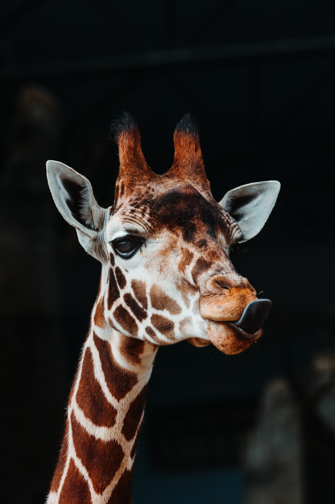
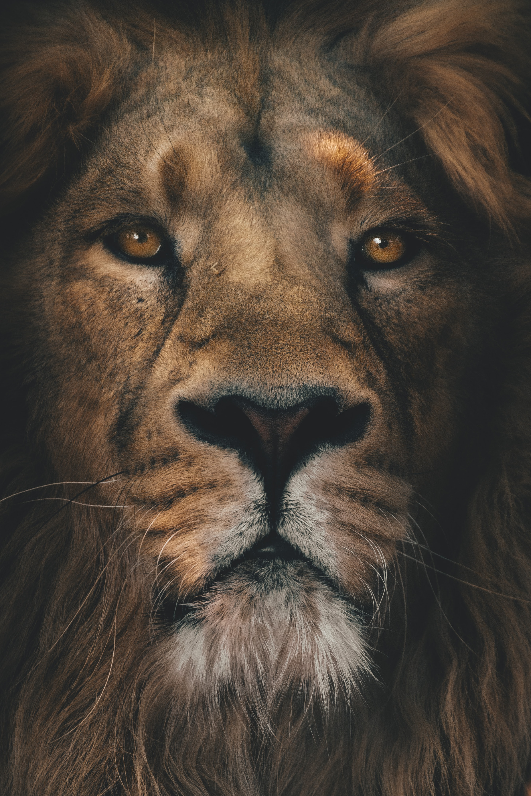
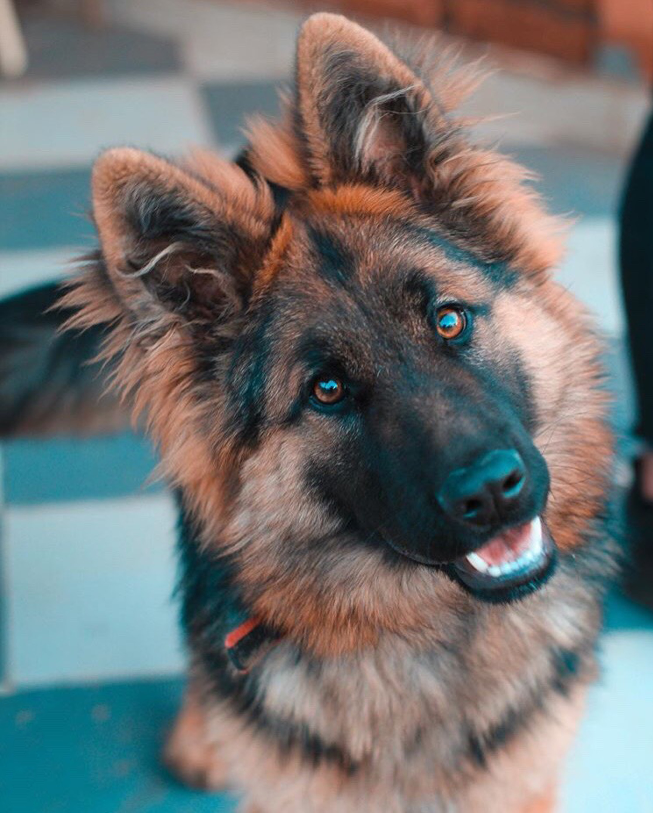

Animais Fantásticos
- 
-

-

- 
- 
Girafa
As girafas são os únicos membros de seu gênero e, juntas com os ocapis, formam a família Giraffidae. Atualmente estão listadas quatro espécies de girafa existentes e nove já extintas (ver abaixo), diferenciadas também pela distribuição geográfica e pelo padrão das manchas.[nota 1] Essas várias subespécies de girafas agora habitam as terras secas ao sul do Saara. As girafas se distribuem em dois grupos: girafa-do-norte que são tricornes, isto é, com um corno nasal interocular e dois frontoparietais, apresentando pelagem predominantemente reticulada; e girafa-do-sul, sem corno nasal e a pelagem tem predominantemente malhas irregulares.
Gato
A primeira associação dos gatos com os humanos da qual se tem evidência ocorreu há cerca de 9 500 anos,[7][8] período mais antigo ao estimado anteriormente, que oscilava entre 3 500 e 8 000 anos. A subfamília Felinae, que agrupa os gatos domésticos, surgiu há cerca de 12 milhões de anos, expandindo-se a partir da África subsariana até alcançar as terras do atual Egito.[9] Acredita-se que o gato-selvagem-africano (Felis silvestris lybica) era seu antepassado imediato.[10] Adicionalmente, evidências genéticas assinalam que os gatos domésticos atuais partilham uma procedência direta com os gatos selvagens do Oriente Médio.
Esquilo
Os esquilos pertencem a uma grande família de mamíferos roedores, de pequeno e médio porte, conhecida como Sciuridae. No Brasil, são também conhecidos como serelepe, caxinguelê, caxinxe[1], quatimirim[2], quatipuru[2], agutipuru[3] ou acutipuru[4]. Na Galiza e em algumas zonas de Portugal, também são conhecido por esquio[5]. Os esquilos estão espalhados por quase todo o mundo, a maioria nas zonas de climas temperado ou tropical, mas também em algumas zonas de clima frio. Como todos os roedores, possuem presas fortíssimas, com que roem facilmente sementes, principalmente bolotas.
Leão
A pelagem é unicolor de coloração castanha, e os machos apresentam uma juba característica. Uma das características mais marcantes da espécie é a presença de um tufo de pelos pretos na cauda, que também possui uma espora. Habita preferencialmente as savanas e pastagens abertas, mas pode ser encontrado em regiões mais arbustivas. É um animal sociável que vive em grupos que consiste das leoas e suas crias, o macho dominante e alguns machos jovens que ainda não alcançaram a maturidade sexual. A dieta consiste principalmente de grandes ungulados e possuem hábitos noturnos e crepusculares, descansando e dormindo na maior parte do dia. Leões vivem por volta de 10-14 anos na natureza, enquanto em cativeiro eles podem viver por até 30 anos. Alguns animais desenvolveram o hábito de atacar e devorar humanos, ficando conhecidos como "devoradores de homens".
Cão
Com expectativa de vida que varia entre dez e vinte anos, o cão é um animal social que, na maioria das vezes, aceita o seu dono como o "chefe da matilha" e possui várias características que o tornam de grande utilidade para o homem. Possui excelente olfato e audição, é bom caçador e corredor vigoroso, relativamente dócil e leal, inteligente e com boa capacidade de aprendizagem. Deste modo, o cão pode ser adestrado para executar um grande número de tarefas úteis, como um cão de caça, de guarda ou pastor de rebanhos, por exemplo. Assim como o ser humano, também é vítima de doenças como o resfriado, a depressão e o mal de Alzheimer, bem como das características do envelhecimento, como problemas de visão e audição, artrite e mudanças de humor.